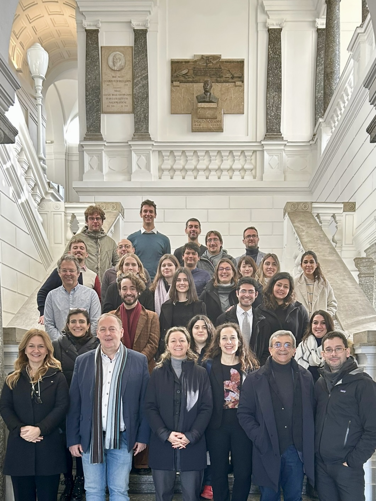

ASTROTECH school on fundamentals of material printing technologies and smart composites integration in tools for neural-cell cultures at the technology innovation company Avanzare (Logroño, Spain), 15-17 May 2023.
ASTROTECH school on validation in vivo of electronic, optogenetics, photonic astrotechnologies at the Consejo Superior de Investigaciones Científicas [CSIC] (Madrid, Spain), 13-14 July 2023.
ASTROTECH school on glioelectronic device development fabrication and validation (in vitro, ex vivo) at the University of Cambridge [UCAM ] (Cambridge, England), 09-11 October 2023.
Here are reported noteworthy training events in which I had the pleasure of participating as a student.
Past events
ASTROTECH school on gliophotonics (internal and mid-term review meetings of the consortium) at the Politecnico di Milano (Italy) from January 23 to January 26, 2023.

Astrotech ESRs, PIs, PO - Politecnico di Milano, Città Studi (Italy)
The first edition of the School of the Italian Statistical Physics Society (Società Italiana di Fisica Statistica, SIFS), held at the IMT Scuola Alti Studi Lucca (Italy) from August 29 to September 8, 2022.